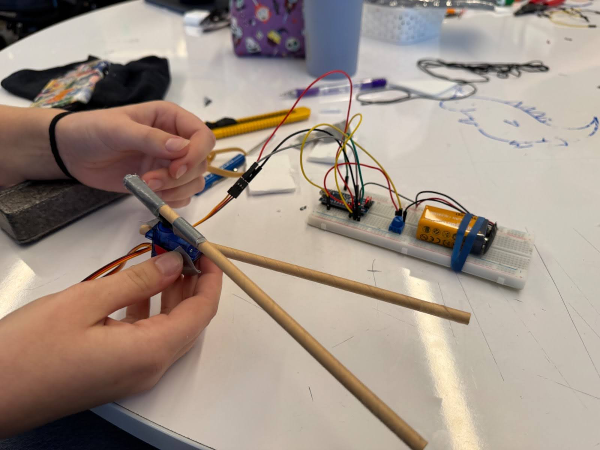
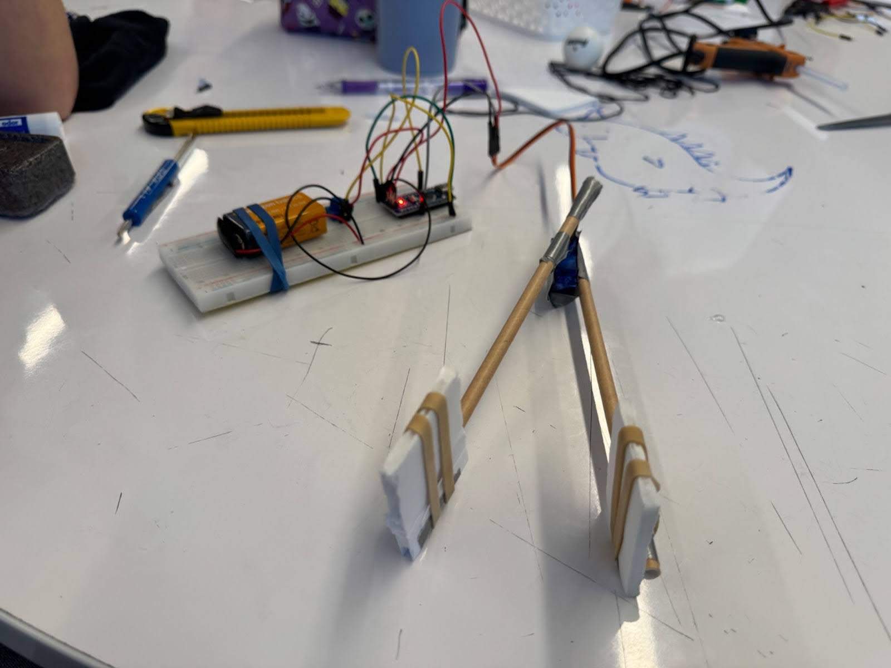

Figure 0. A schematic of the robot hand.
Figure 1. Code that rotates the servo based on potentiometer values.
We decided to keep our design simple. While we were originally planning to create a hand that would open and close around the ping pong ball, we realized using the "chop stick technique" was more efficient, easier to build, faster to build, and still executed the task. From there we realized this technique was best for use, using tape, we fixed one arm to the base of the servo, and fixed another arm to the sweeper of the servo using tape (Figures 2 and 3). The servo is attached to the arduino, which sets its angle based on readings from a potentiometer. As seen in the schematic (Figure 0), the potentiometer is connected to analog pin A0, and our servo data pin is connected to PWM pin D3. As seen in the code (Figure 1), we first imported the servo library which we will use to control the servo. We set the potentiometer pin as input and attach the servo data pin to the servo object. Then in the forever loop, we read the value of the potentiometer, then map it using the map function from a value which ranges from (0 to 1023) to (0 to 180) degrees that is required for the servo.
Figure 2. Prototype design.
Figure 3. Video for protoype.
Figure 4. Final design.
Our prototype design used two straws as arms (Figure 1), and after analyzing what worked well and what didn't work in our prototype we made a few simple add ons and changes. We utilized the same "chop stick technique" that we used in our prototype, and then added flat pieces of styrofoam to the ends of it. This created a larger surface area to grab the ping pong ball (Figure 4). We still knew that because of the materials there was not quite enough friction to pick up the ball, therefore we added the rubber band for some material resistance. The result is that we were able to simply and quickly pick up the ball, drop it, pick it up, and drop it again (Figure 5). By changing the angle of the servo, we can open and close the arm to pick up and release the ping pong balls. The Arduino reads the value of the potentiometer, then maps the value degrees. When we change the value on the potentiometer, or twist the dial, it moves the motor, and therefore moves the straw attached to the motor.
Figure 5. Video for final design working.